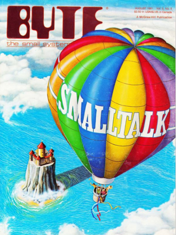
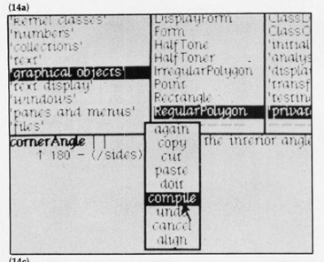

Back in November of 2023, I was lucky enough to participate in a “Morality in Tech” workshop hosted by Princeton’s CITP put on by Kevin Munger. It was a fascinating interdisciplinary group of people trying to wrap our heads around how to grapple with how to tie moral and ethical frameworks to technological change. It culminated in the “Building the Society We Want” syllabus.
This post is a modified version of a talk I gave on the historical development of Smalltalk, and how I see it as a fundamentally different way of thinking about technology than we’re used to today. Unfortunately, I ultimately don’t see it as a way out of the mess we’re in on the social web. Bluesky cannot resolve the fundamental problems with microblogging, which are fundamental to the technology.
What is Smalltalk?
Smalltalk was developed by Alan Kay, Dan Ingalls and Adele Goldberg at Xerox PARC in the 1970s. What it was is a little hard to frame in terms of our contemporary categories around computing. It was more than a programming language and not exactly an operating system as we’ve come to understand them. It was the software part of Alan Kay’s overarching personal computing vision (from back before computing was really personal computing). Smalltalk had a lot of things that are now very common, but were very uncommon when it came out. It was an early iteration of Object-oriented programming1, it had an early graphical interface, all code was just-in-time compiled (and could be recompiled on the fly), and it integrated a development environment into how the user interacted with the system. But Smalltalk was also a philosophy of computing:
look for the distinction between a programming language and a programming system, and consider the difference in providing a system in which the user can feel individual mastery over complexity
(emphasis mine) The intention was to make the vast complexity of a computer system something that end-users could control. The system should allow the complexity of the system to be comprehensible to the user, and allow them to adapt and reorient it at their will.
A lot of what I’m drawing on here is from the 1981 issue of BYTE Magazine in which PARC chose to write a public introduction to the newest iteration of the Smalltalk system. It’s available online and a truly fascinating read that I can’t recommend enough.

Smalltalk was intended to give the User the power of God over the computing system. This isn’t really subtext. In this introduction to Smalltalk, they provide the following illustration:
On the far left, the System Programmer (God) creates a system (the Taj Mahal). The Programmer creates things (a bridge) for the end-user using the things provided by the System Programmer. Smalltalk was intended to democratize the power of creation, moving into the second figure from the left, in which the Programmer creates kits that the User can use to construct what they want. In Figure 3 this goes even further, as Users can create the kits themselves that they can assemble into what they want. On the far right, however, the idea is that Programmers / Users should be able to climb up above God and impose their own will over that of the System Programmer: to become God.
It’s a vision of a radically empowered user who can manipulate every aspect of their computing environment. In my mind, this vision is exactly what it means to have a “convivial” tool in the sense of Ivan Illich: tools which empower human liberty rather than constrain.
There are costs, however, as Smalltalk asks much more of users, as Kay and Goldberg write in 1977:
The burden of system design and specification is transferred to the user. This approach will only work if we […] allow ordinary users to casually and easily describe their desires for a specific tool.
But the benefit is a fully “reactive” system2. What did this look like?

Essentially, you had a browser like the above, through which you could navigate through your system, then the panel at the bottom allowed you to edit the code defining how that part of your system worked. You could then choose to re-compile that part of your system and it would automagically update to follow your new instructions. Voila, complete control over the system, manipulable at runtime.
But there’s one last quote, from Daniel Ingvalls from his article about the design principles of Smalltalk:
Natural Selection: Languages and systems that are of sound design will persist, to be supplanted only by better ones.
Our computing is not based around Smalltalk these days, nor does it look very much like this: it died out in favor of opaque systems with a lack of user-control. It seems that users were, in the end, not willing to take the burden of full responsibility for the functioning of their own computing environment.
Empowerment is still about power
I think the question of inevitability is what I really struggle with here. The dream of a system that radically empowers the user is beautiful. But are users willing to actually take this power? Can they? In grappling with this question, I tried to think about affordances of social media and the extent to which they align with Smalltalky principles.
- Bluesky lets users choose their own Feed algorithm.
- The hashtag was created as a tool for users to take control of discovery and categorization themselves.
- Distributed social media services (e.g. Mastodon) seek to allow individuals to choose the community (and, therefore, community norms) they wish to belong to.
- individual choice about network links to create (e.g. friending on Facebook): this is the source of a lot of ideological polarization, rather than something done “to” users by algorithms. In each of these, the user gets pretty profound ability to shape what their social media is. But it’s still not enough! My choice of a feed algorithm doesn’t give me the experience of using Bluesky that I would have if everyone were to use my preferred feed. In order for me to “choose” my experience on the platform, I need the power to choose how everyone experiences the platform. Empowering users doesn’t avoid the critical question of who holds the power to make such changes.
In a previous post, I claimed that there were four main definitional characteristics of microblogging: (1) short texts (2) virality (3) simple engagement possibilities and (4) an infinite feed. The users can’t alter these characteristics on BlueSky or on any other platform. Removing reshares from your own screen doesn’t change whether you experience virality and the associated credibility cascades and everything else associated with virality. To kill virality, you’d need to make aggressive changes like removing the visibility of likes from everyone’s screen, removing ranking based on likes, views, clickthroughs, killing reshares globally and the list of changes goes on. After making all of those changes for everyone then maybe you’ve done a good job of breaking virality. Can you give virality back to a single user, at that point?
It is fundamentally impossible for everyone to alter everything about their social media experience to their whims, while continuing to make it meaningfully social. Even in a world where everyone gets to choose everything about how they interact with social media, they don’t get to choose how everyone else interacts with social media3. Our experiences online aren’t just shaped by our own choices, but by the choices of those around us4. We can’t “solve” our experience by changing only our own affordances.5 Bluesky can only ever give the illusion of autonomy, it can never provide true control over the environment as envisioned by Smalltalk. That autonomy only works for a computing platform that is fundamentally a-social: it interacts only with you and responds only to your preferences.
Convivial, anarchist empowerment to shape one’s own technical reality doesn’t offer a way out of the shared reality we create with technologies. At best, it can offer a patchwork of small fixes. We cannot fundamentally alter the medium, because the medium is defined by what is shared. The critical question is who has the power to choose the shape of the overall technology, and who gets to study how the world is changed by those choices. Right now, only the platforms have these powers.
Footnotes
In fact, Alan Kay doesn’t actually think modern OOP is at all related to what “OOP” was for Smalltalk. If I had to condense down what I understand he sees as the critical distinction, I’d say that it would be something about autonomy: his vision saw individual “objects” being more-or-less autonomous computing units, which would communicate with one another and this would allow the programmer to create complex systems based on these interactions. Crucially, he saw this as a lot more than a paradigm for writing and organizing a particular piece of software.↩︎
“The Smalltalk programming environment is reactive: the user tells it what to do and it reacts, instead of the other way around.” Tesler 1981↩︎
And, in particular, a world in which collaborative filtering continues to play a strong role in what content your network (or other people more broadly) sees.↩︎
The most banal and obvious platitude of social science: “other people matter for your experience of life”↩︎
Well, you can just sign off completely. And maybe you should! But that’s a different question altogether. For what it’s worth, I’ve basically signed off. I don’t think the bargain is a positive one in my life.↩︎
Reuse
Citation
@online{dimmery2024,
author = {Dimmery, Drew},
title = {Is {Bluesky} Convivial?},
date = {2024-11-21},
url = {https://ddimmery.com/posts/is-bluesky-convivial},
langid = {en}
}